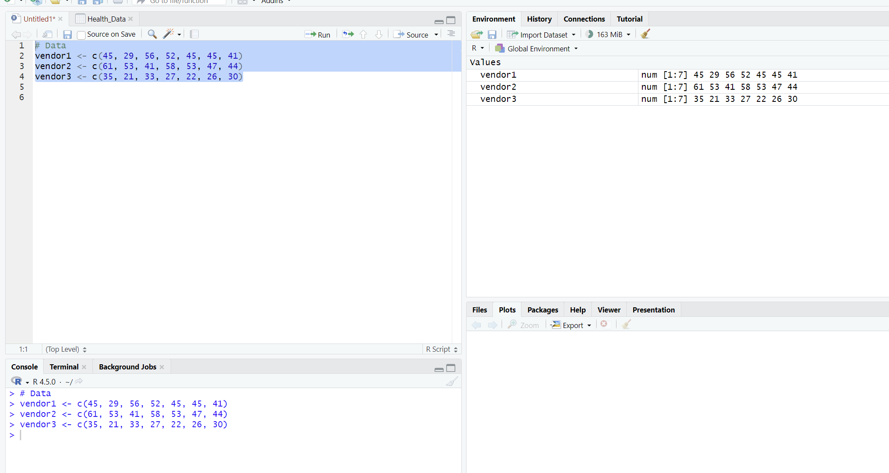

Unit 7: Data Activity 6
Deadline: End of Unit 7 | Type: Formative | Status: ✓ Complete
Scenario-Based Exercise – 95% Confidence Interval
This exercise focuses on using confidence intervals to evaluate the effectiveness of different training programs. An HR organisation hired three vendors to train employees and improve their work efficiency. By calculating 95% confidence intervals for each vendor's training outcomes, I was able to determine which vendor showed statistically significant improvements.
The Scenario
An HR organisation wishes to introduce a new set of training programs to increase the work efficiency of their employees. To do this, the organisation hires 3 vendors such that each vendor will train a group of employees with a one-week program. It is assumed that the employees across the three groups have the same work efficiencies before the start of the program.
The following table summarizes the scores obtained after the one-week training. Each group has 7 employees.
| Group 1 (Vendor 1) | Group 2 (Vendor 2) | Group 3 (Vendor 3) |
|---|---|---|
| 45 | 61 | 35 |
| 29 | 53 | 21 |
| 56 | 41 | 33 |
| 52 | 58 | 27 |
| 45 | 53 | 22 |
| 45 | 47 | 26 |
| 41 | 44 | 30 |
Task: Find out the mean efficiency of each vendor and determine which vendor shows a higher significance of improvement in employee efficiency statistically at the 95% level.
Learning Outcomes
- Systematic understanding of the key mathematical and statistical concepts and techniques which underpin mechanisms in Data Science and AI
- Apply mathematical and statistical methods in these fields to help in the decision-making process
- Critically evaluate the use of statistical analysis and the numeric interpretation of results as aids in the decision-making process
Analysis and Results
Step 1: Setting Up the Data in R
First, I created three vectors in R to represent the efficiency scores for each vendor group. Each vector contains 7 scores corresponding to the 7 employees trained by each vendor.
Step 2: Creating a Function for 95% Confidence Interval
Since the sample size for each group was small (n = 7) and the population standard deviation was unknown, I needed to use the t-distribution to calculate confidence intervals. I created a custom function called ci95 that calculates the 95% confidence interval for any given dataset.
The function does the following:
- Calculates the sample size (n)
- Computes the mean of the data
- Calculates the standard error
- Uses the t-distribution critical value (qt) with 95% confidence level
- Returns the lower and upper bounds of the confidence interval
Step 3: Results and Interpretation
Mean Efficiency Scores
After running the analysis, I calculated the average efficiency score for each vendor:
- Vendor 1: 44.71
- Vendor 2: 51.00
- Vendor 3: 27.71
95% Confidence Intervals
The 95% confidence intervals for each vendor were calculated as follows:
| Vendor | Mean Score | Lower Bound (95% CI) | Upper Bound (95% CI) |
|---|---|---|---|
| Vendor 1 | 44.71 | 36.78 | 52.65 |
| Vendor 2 | 51.00 | 44.22 | 57.78 |
| Vendor 3 | 27.71 | 22.83 | 32.60 |
What This Means
The confidence intervals tell us the range where we can be 95% confident that the true mean efficiency score lies. Looking at the results:
Vendor 3 vs Others: The confidence interval for Vendor 3 [22.83, 32.60] doesn't overlap at all with Vendor 1 [36.78, 52.65] or Vendor 2 [44.22, 57.78]. This is a clear sign that Vendor 3's training program resulted in significantly lower efficiency improvements compared to the other two vendors. The lack of overlap means we can be statistically confident that Vendor 3's performance is genuinely worse.
Vendor 1 vs Vendor 2: The confidence intervals for these two vendors do overlap slightly. Vendor 1's interval goes up to 52.65, while Vendor 2's starts at 44.22, creating an overlap zone. However, Vendor 2 still has both a higher mean score (51.00 vs 44.71) and a confidence interval that's shifted higher overall. This suggests that while we can't say with absolute certainty that Vendor 2 is better than Vendor 1, the evidence leans in that direction.
Statistical Significance: At the 95% confidence level, Vendor 2 shows the strongest performance with the highest mean efficiency score and the highest lower bound. Vendor 1 performs reasonably well but falls short of Vendor 2. Vendor 3 clearly underperforms compared to both other vendors, with statistical significance.
Key Findings
- Vendor 2 is the Most Effective: With a mean score of 51.00 and a 95% CI of [44.22, 57.78], Vendor 2 demonstrates the highest and most consistent improvement in employee efficiency
- Vendor 1 Shows Moderate Effectiveness: Mean score of 44.71 with 95% CI [36.78, 52.65] indicates good performance, though slightly below Vendor 2
- Vendor 3 Significantly Underperforms: Mean score of 27.71 with 95% CI [22.83, 32.60] shows statistically significant lower performance with no overlap with other vendors
- Non-Overlapping Intervals: Vendor 3's confidence interval is completely separate from Vendors 1 and 2, confirming statistical significance of the performance difference
- Evidence-Based Decision Making: The 95% confidence level provides strong statistical support for selecting Vendor 2 as the training provider
Conclusion
To evaluate the effectiveness of three training vendors, an HR organisation compared the work efficiency scores of employees after completing a one-week training program. Each vendor trained a group of seven employees, and it was assumed that all employees had a similar level of efficiency before the training began.
After the training, the average efficiency score was 44.71 for Vendor 1, 51.00 for Vendor 2, and 27.71 for Vendor 3. Since the sample size for each group was small and the population standard deviation was not known, 95% confidence intervals were calculated using the t-distribution to assess the statistical significance of the results.
The 95% confidence interval for Vendor 1 was [36.78, 52.65], for Vendor 2 was [44.22, 57.78], and for Vendor 3 was [22.83, 32.60]. The confidence interval for Vendor 3 does not overlap with those of the other two vendors, which suggests that Vendor 3's training program led to noticeably lower efficiency improvements. Although the confidence intervals for Vendor 1 and Vendor 2 slightly overlap, Vendor 2 achieved the highest average efficiency score and showed stronger overall improvement.
Based on the 95% confidence level, Vendor 2 appears to be the most effective training provider, while Vendor 3 shows the weakest performance. This analysis helps support a clear and evidence-based decision when selecting a training vendor.
Reflection
This exercise really helped me understand how confidence intervals work in practice and why they're so valuable for making business decisions. Before this, I knew the theory behind confidence intervals, but actually applying them to a real scenario made everything click.
What stood out to me was how the confidence intervals gave us a way to quantify uncertainty. Instead of just looking at the mean scores and saying "Vendor 2 has a higher average," the confidence intervals let me say with statistical confidence which vendor genuinely performed better. The fact that Vendor 3's interval didn't overlap at all with the others was a clear red flag that their training wasn't effective.
I also learned that overlapping confidence intervals don't necessarily mean there's no difference between groups - it just means we need to be more careful about making strong claims. Vendor 1 and Vendor 2's intervals overlapped, but Vendor 2 still showed stronger overall performance. This taught me to look at the whole picture, not just whether intervals overlap or not.
Using R to create a custom function for calculating confidence intervals was a good practical exercise too. It made me think about what actually goes into these calculations - the sample size, standard error, and t-distribution critical values. Understanding the mechanics behind it makes me more confident in interpreting the results.
Overall, this activity showed me how statistical methods can support real-world decision-making in HR and business contexts. If I were actually advising this organisation, I'd confidently recommend Vendor 2 based on this analysis, and I'd strongly advise against using Vendor 3. That's the power of using proper statistical analysis instead of just gut feeling.